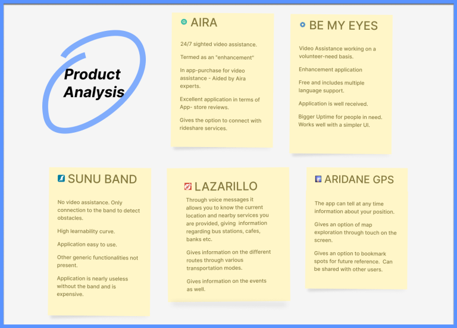
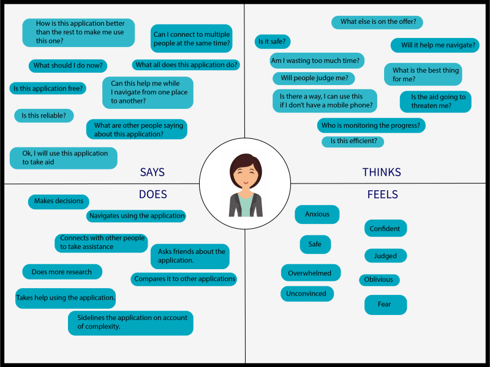
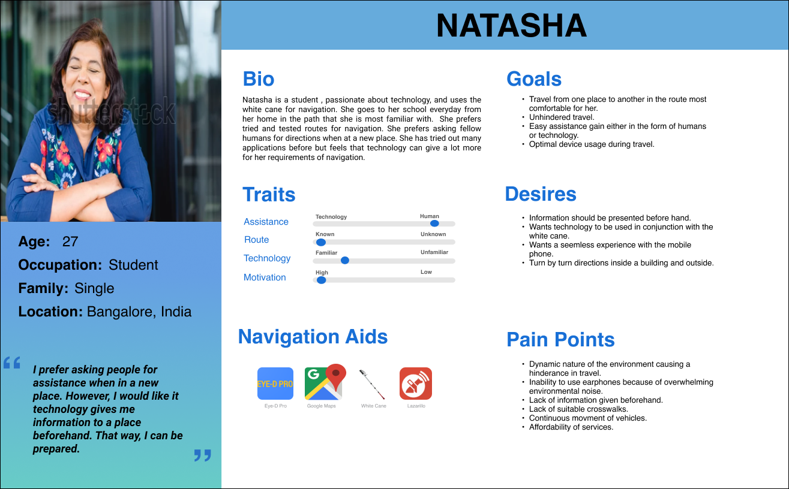
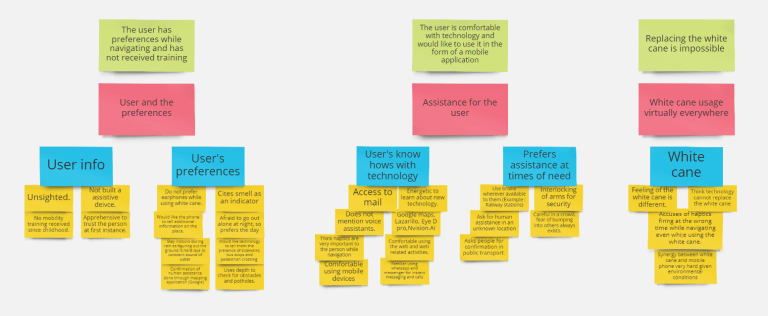
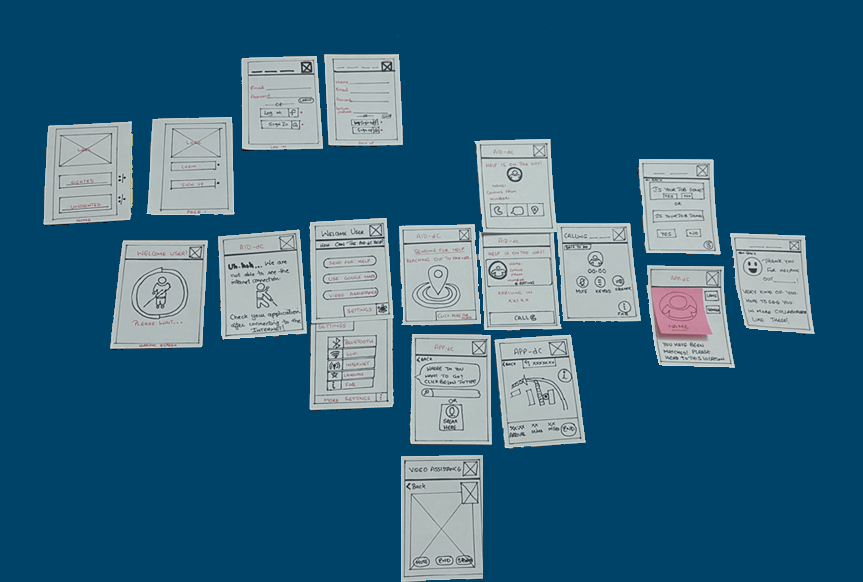
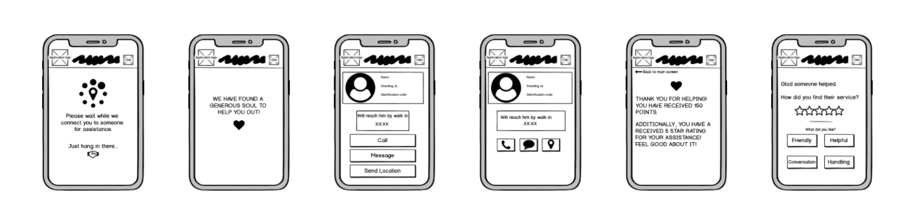
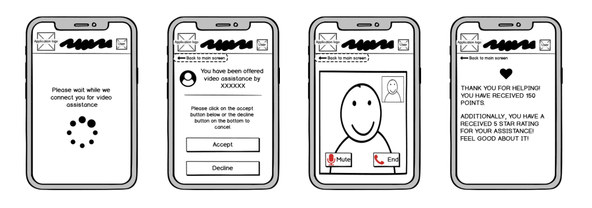
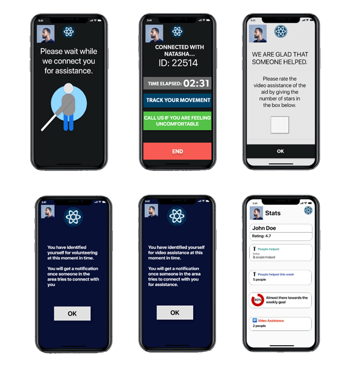

B-AID : An assistive mobile application for individuals who are blind
BACKGROUND
According to the WHO website, globally, it is estimated that at least 2.2 billion people have a vision impairment or blindness, of whom at least 1 billion have a vision impairment that could have been prevented or issues that are unaddressed. The number of individuals who are blind, using technology to assist them, is relatively few in numbers compared to the total number. These technologies include mobile applications, smart walking sticks, voice assistants, and so on., This project looks at developing a mobile navigation application for individuals who are blind with the help of UX research.
- Categories: Accessibility, Mobile Technology, User-Centered Design, UX Research
- User Base: Individuals who are blind
- Project Timeline: May 2020 - December 2020
- Team Members: Solo Project
- Research Methods: User Interviews, Competitive Analysis, Field Studies, Affinity Map, Persona, Storyboards, Empathy Map.
My Role
UX researcher and UX designer responsible for designing a mobile application assisting individuals who are blind.
Impact
Many individuals who suffer from vision loss will be helped by the application irrespective of the demographic. Increased interactions because of the continuous volunteering of sighted people. This would lead to greater usage of the application and greater awareness among people. The prototype if developed can trigger a wide request response chain and enable the community to aid the individual. An application that can be a proper substitute in the market for the solitary applications like AIRA/Be My Eyes. More individuals who are blind, connected to technology. Ease of Access because of prior interactions with voice assistants. Intended to perform the simplest of the functions in the the most efficient way possible.
The project
This is project driven by my motivation to help individuals who are in need of assistance. As a part of my thesis, I am investigating the navigational habits of individuals who are blind. From the semi-structured interviews, I decided to use that data, along with other user research techniques to come up with an application that may encapsulates things that users would like to see in a navigational application. Currently the functionalities are spread out across applications which leads me to wonder, can I make an application prototype that puts all the navigation functionalities in one application?
Some Basic Questions
Who are the users?
Individuals with vision loss, capable of using a mobile phone.
What problem am I solving?
There exist some issues related to navigation that persist in the lives of individuals who are blind, obtaining information for directions, and asking people for directions when in a new place, to name a few. There is no framework to cover all the issues related to navigation on a single application. Hence, I decided to come up with an application prototype to help solve the problem.
How am I solving the problem?
Generative Research and Human Centered Design, Rapid Prototyping.
Recruitment
I recruited participants by reaching out to a charity run blind school.
Demographic: Individuals who are blind. Age - 18-27
Total number of participants interviewed 14
Gender: M/F
Ethnicity: Any
Devices: Mobile (Android and IOS)
RESEARCH
Short study involving generative research to get the pain-points and preferences of individuals using navigation applications. Conducting user research gave me an idea on how the design should be to yield maximum results. Research methods used in this study include:
COMPETITIVE ANALYSIS
To get a feel of what they feel like when they wear devices while moving from one place to another, I decided explore some of the mobile applications and other devices thoroughly.
INITIAL STORYBOARDS
I created early research storyboards to envision the finished application in terms of a real world setting.Turns out, the storyboards were very short, sequence-orientated, and fit the overall narrative well. I aimed to envision the finished research project - how the mobile application would function in a real life scenario. Storyboards changed my perception of the functionalities that can be implemented in my project. I realized that my application cannot have all the functionalities that I desire because of constraints indicated by the storyboards. The storyboards helped me synthesize the content and match my thinking with the constraints.

WHAT DID STORYBOARDS TEACH ME?
FIELD OBSERVATIONS
I travelled to blind schools to observe the individuals in a natural space, taking down notes, combining the information obtained with the interviews to draw insights. It enabled me to understand the intricacies and complexities of daily life. Following up with the participants in their natural element made me uncover information that I was not previously aware of.
LEARNINGS FROM FIELD STUDIES
EMPATHY MAPS
I came up with an empathy map to understand and prioritize the user's needs. I put this step as a forward to the user interviews. By taking one of the participants from the interview as a stand point, the empathy map was created.
PERSONAS
Among the other things, they want to see applications that give them the presence of sidewalks, the positioning of intersections, an emergency assistance button, and a scanner of handwritten data. Additionally, several application-specific pointers were noted down and eventually referenced to a User Persona to get an idea of how the application will be shaped in the future.
USER INTERVIEWS
I would like the mobile application to tell me about the position of the bus stops, traffic in the area and so on..
I use google maps a lot. I also use Lazarillo to help me within the walls of the city. I like applications where the functions are easily visible
AFFINITY MAPPING
Having obtained the data, I am now looking at drawing themes and prioritizing them.
The Affinity diagram helped me structure my thoughts and organize the content.
Insights
Information: Participants want information to be presented to them directly via the application or require fellow human to tell them navigational directions.
Functions: Participants look for functions to be ‘visible’ – easily identifiable.
Specific Information: Look out for information like Bus Route Information, Bus Stop names, nearby accessible stops, etc.,
Click Rate: Participants mentioned that they preferred minimum clicks and maximum utility for each section of the application.
Content: Participants mentioned that they do not want information overload when it comes to the navigation application.
Technology vs Human-assistance: Participants want timely assistance when it comes to navigation and other activities that tend to make them take assistance.
❗ Importance of Progressive Disclosure
I am extremely mindful to employ progressive disclosure. Given that we are dealing with individuals who are blind, we really cannot push too much information on a single screen. The content has to be relatively easy to identify and understand. Progressive Disclosure would allow me to push all the information that was not necessary to screens at the back that would only appear when needed. (Based on the functionalities presented to the user.)
Design
Starting with the Pen and Paper Sketches for low fidelity, Balsamiq Mockups for medium fidelity, and Adobe XD for high fidelity mockups, I went in stages.
Pen - Paper Sketches
I love to put my thoughts on paper so I decided to go ahead with the pen-paper route. Anything that comes to my mind has to hit the white sheet first.
Wireframing
I used Balsamiq Mockups to generate the wireframes of the skeletal structure of the application. Balsamiq Mockups is a great tool with a low learnability curve and relative ease of use.
Main Screen
This is the main page and is a key component in the application. It has 3 pivotal functions
Ask for Assistance , Connect to Maps , Video Assistance
Function Screens #1
Function Screen #2
Prototype
Adobe XD was the tool used and I also used voice feature given by the tool to do the same.
To take a look at the prototype, click Here
Takeaways
From trying to empathize with the blind community to putting all my might behind making a prototype that is accessible to them, I have come a long way. I feel that the project has made me a stronger person mentally. I was skeptical at the beginning of the project, but as time progressed, the belief instilled in me by the community made me realize how we are gifted to have everything at our disposal and use it with so much ease. Along the way, I faced innumerable challenges. Everyone I spoke to had an opinion and a design idea. I went with my instincts, tried being in the shoes of a blind person, empathizing with them. This helped me understand and develop a novel idea for the application. I went with the idea that connecting people on the app is similar to what happens in rideshare, and I hope that one day, even if my prototype does not hit the market, it stands as an inspiration for many designs to come.